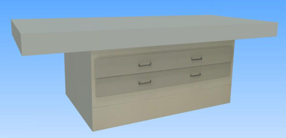

Mesa de Cartas
La Mesa de Cartas pone a disposición de los alumnos una superficie adecuada y cómoda para trabajar con cartas náuticas normalizadas. Dispone además de cajones para archivo de las cartas náuticas en uso.
